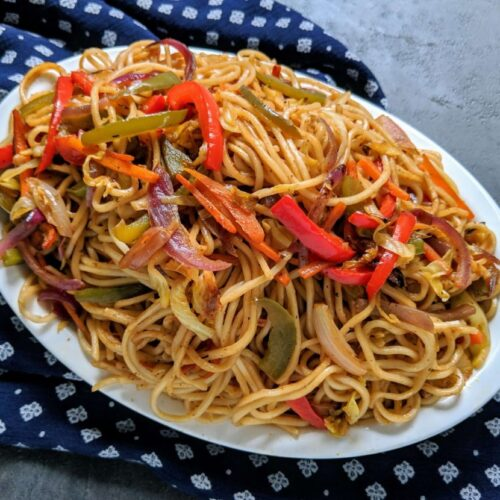

Home
Thukpa Recipes

Description
Thukpa is one of the very popular dish in Nepal.
Ingredients
- noodles - 200gm
- Pork (small pieces) - 100 gm
- Pork bones - 100gm
- Onion(julien) - 50 gm
- Soya sauce - 10 ml
- Carrot - 10 gm
- Chilli - 5 gm
- Msg - 5 gm
- Salt - 5 gm
- Oil - 7 ml
- water 250ml
- lemon or lime - 2
- Boil the noodles in 200 ml water for 4-5 minutes
- Take out the noodles out of the pot and let it drain the water for 30 minutes to dry.
- Heat the pot put oil and heat it for 2 minutes.
- Fry the pork pieces until it gets crisp.
- Put all the other vegetables and bones into the pot and fry for 3 minutes
- Put the msg and salt into the pot.
- Pour the water into the pot, close the lid and boil it for 30 minutes.
- Now make a serving of noodles in the bowl.
- Pour the soup and ingredients into the bowl of noodles
- The Thukpa is ready. Enjoy